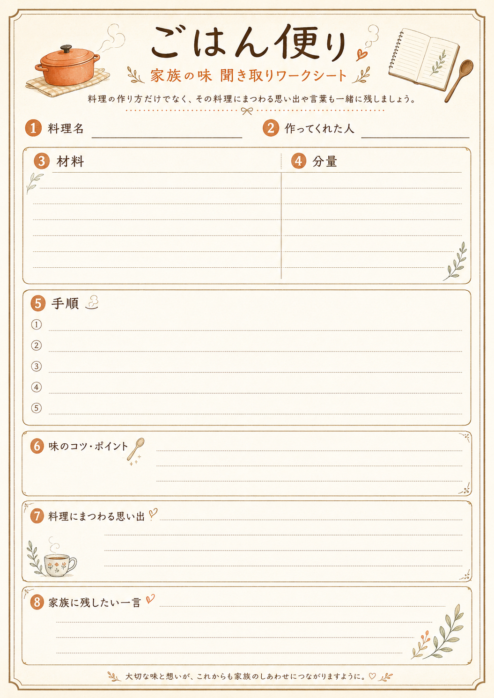

届く
聞き取りワークシートセットが自宅に届きます。
聞き取りワークシートキット
家族の味を聞き取り、一家に一冊のレシピ本にして継承する。
親や祖父母の“いつもの味”を、材料や手順だけでなく、思い出や言葉まで残すサービスです。
聞き取りワークシート
材料 / 手順 / 思い出Before it fades
おばあちゃんの煮物、どうやって作っていたんだろう。お母さんの豚汁の味、ちゃんと聞いたことがなかった。 家族の味は、日常の中にありすぎて、記録されないまま失われていくことがあります。
あなたの家にも、残しておきたい味はありませんか？
How it works
聞き取りワークシートセットが自宅に届きます。
親や祖父母に、料理の作り方や思い出を聞きます。
材料、手順、味のコツ、思い出、残したい言葉をワークシートに記録します。
書き終えたワークシートを返送します。
受託側がアプリとAIとの編集によって内容を整理し、一家に一冊のレシピ本としてお届けします。
Worksheet kit
スマホが苦手な親や祖父母でも参加しやすく、ヒアリングもしやすい、紙のワークシートで聞き取りを行います。
Inside the sheet

「この料理の味のコツはどこ？」
「分量は、いつもどれくらい入れていた？」
「この料理には、どんな思い出がある？」
「この料理を未来の家族に伝えるなら、どんな言葉を添えたい？」
AI + human editing
返送されたワークシートをもとに、AIが材料、手順、思い出を整理し、読みやすいレシピページの下書きを作成します。 最後は人の目で確認し、家族らしい言葉や温度感が失われないように、一冊の本に仕上げます。
Finished book
福山家の味の記録
Recipe 01
Difference
Scenes
Request
現在はプロトタイプ段階のサービスです。